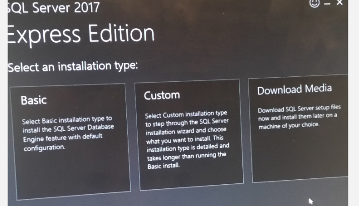

First ensure that you have either Windows 7 or Windows 10 installed on your laptop.
If you are using a Mac laptop, you can install Parallels or VirtualBox to run windows in a virtual machine (note: you will need to get a windows license to install it in a virtual machine).
You'll need to know if your version of Windows is 32bit or 64bit in order to install the correct versions of the remaining installations. Check it by...
Perform each of the installations below, in sequence, so that you are ready for the first day of class.
For any of the below that have no instructions just accept the defaults when prompted by the installer.
| Setup Page Link | Instructions Link |
|---|---|
| Amazon Web Services (AWS) | INSTRUCTIONS |
| Google Cloud | INSTRUCTIONS |
| Microsoft Azure | INSTRUCTIONS |
| github |
INSTRUCTIONS ** Once you've created your github account send us your github username so that we can give you rights to class group areas. |
| Installation Download Link | Instructions Link |
|---|---|
| Adobe Acrobat Reader | - |
| Google Chrome | - |
| Visual Studio.net Community Edition | INSTRUCTIONS |
| git | - |
| Atom | - |
| Sublime | At the top of the screen choose just "Windows" for 32 bit or Windows 64 bit for 64 bit. |
| Emeditor | Click 64-bit installer if your computer is 64-bit, 32-bit installer otherwise. |
| Visual Studio Code | - |
| SQL Server Express & SQL Server Management Studio (SSMS) |
INSTRUCTIONS
** If you are using windows 7, Sql Server 2017 won't install, so you will need to install Sql Server 2014 Express instead from here. ** If you are using windows 10 and you see a screen like the one below during the install, choose custom and wait and then proceed with the instructions above.  |
| node.js | On the 'LTS' tab (the default, selected tab) on the Windows Installer (.msi) row select either the 32-bit or 64-bit link according to your version of Windows. |
| PostgreSQL & pgAdmin | Select version PostgreSQL 9.6.9 from the top dropdown. Choose Windows x86-32 if you're 32 bit or x86-64 if you're 64 bit from the 2nd dropdown and then click the Download Now button. Once downloaded following these INSTRUCTIONS. |
| elixir | Just click Download the Installer |
| python 3.6 |
Click the yellow Download Python 3.6.5 button at the top.
Once downloaded make sure that both of the checkboxes on the install prompt screen are checked and then click the Install Now button. |
| python 2.7 (for mysql) | Click the 'Latest Python 2 Release - Python 2.7.15' link near the top. |
| MySQL & MySQL Workbench | Click the 2nd blue Download button at the very bottom of the page, the one for the 230MB file, and then follow these INSTRUCTIONS. |
| Ruby & Rails | Click the big, red download button and accept the defaults. When prompted about "which components" and you have to choose 1, 2 or 3 just press ENTER. |
| VirtualBox | Click the Windows Hosts link. |
| Putty | Click the link at the top of the page next to 32-bit if your computer is 32-bit, the one next to 64-bit if you're 64 bit. |
| WinSCP | Click the green download button at the bottom. |
| 7-zip | Click the link at the top of the page next to 32-bit ".exe" type if your computer is 32-bit, the one next to 64-bit ".exe" if you're 64 bit. |